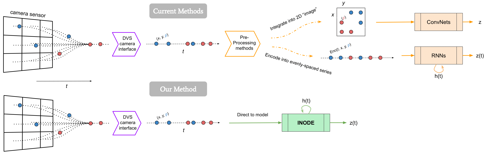
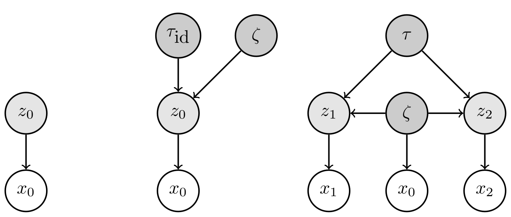
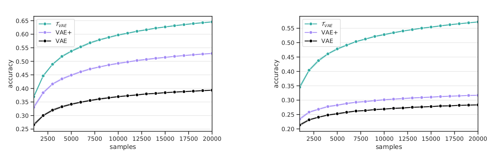
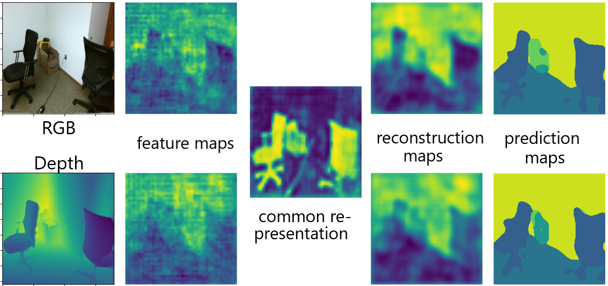

|
Publications
|
|  |
Real-time Classification from Short Event-Camera Streams using Input-filtering Neural ODEs
Giorgio Giannone,
Asha Anoosheh,
Alessio Quaglino,
Pierluca D'Oro,
Marco Gallieri,
Jonathan Masci
arXiv preprint, 2020
Processing Event-based data using iNODE.
|
|  |
No Representation without Transformation (extended version)
Giorgio Giannone,
Saeed Saremi,
Jonathan Masci,
Christian Osendorfer
arXiv preprint, 2020
Learning latent variable models representing transformations explicitly in latent space.
|
|  |
No Representation without Transformation
Giorgio Giannone,
Jonathan Masci,
Christian Osendorfer
Bayesian Deep Learning and Perception as Generative Reasoning Workshops, NeurIPS , 2019
Learning latent variable models representing transformations explicitly in latent space.
|
|  |
Learning Common Representation from RGB and Depth Images
Giorgio Giannone,
Boris Chidlovskii
Multimodal Learning and Applications Workshop, CVPR, 2019
Improving semantic segmentation with common representation between modalities.
|
|